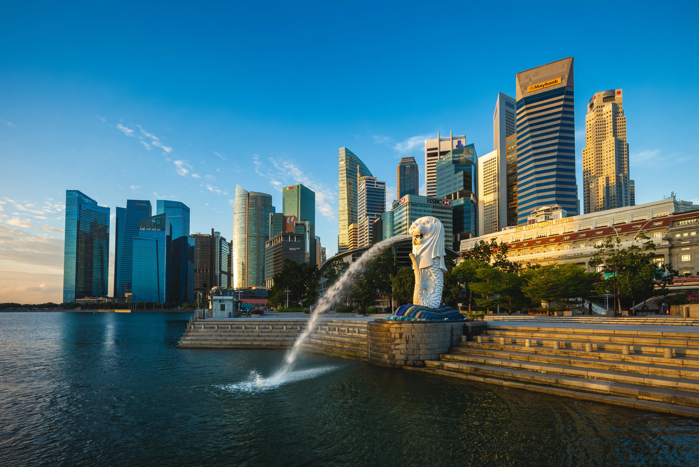
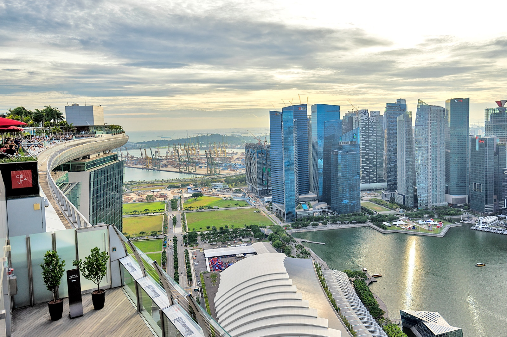

Welcome to Singapore!
Singapore, officially the Republic of Singapore, is an island country and city-state in maritime Southeast Asia.
Famous Tourist Spots

Marina Bay Sand
The Gardens by the Bay is a nature park spanning 101 hectares in the Central Region of Singapore, adjacent to the Marina Reservoir. The park consists of three waterfront gardens: Bay South Garden, Bay East Garden and Bay Central Garden.